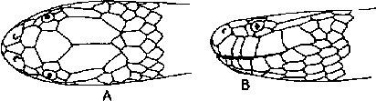
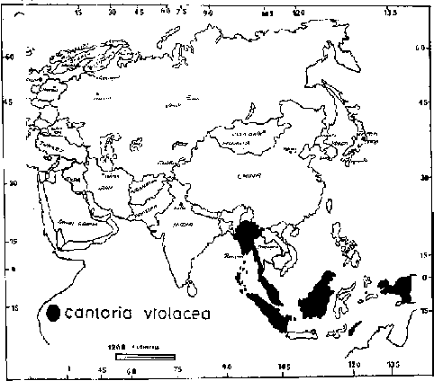

|
Digitized Inventory of Animal Resources: Reptilia ( Snakes ) Principal Investigator: Dr. R. J. B Alfred, Co-Investigator: Dr. Rama Krishna, Contributed by:
Dr. R.C.Sharma |
Taxonomic
Details
----- Scientific Name
----- Classification
----- Synonyms
----- Common Names
Other
Biological Details
----- Habit and
Habitat
----- Distribution
---------- Extent of
Occurrence
---------- Area of occurrence
---------- Altitude
---------- Population
-----
Conservation Status
-----
Diagnostic
Features
-----
Breeding system
Miscellaneous
Information
Literature
Genus . Cantoria Girard 1857.
Maxillary bone projects beyond the palatine, with 9-11 teeth, followed after an interval by a pair of enlarged grooved fangs; anterior mandibular teeth are longest, eyes are small with vertical pupil. Body compressed, elongated. Head depressed, not distinct from the neck, with large shields. nasals separated by a single internasal. Nasal cleft absent in the species, C. violacea, found in the Indian subcontinent (Andaman Is.) but present in the other species, C. annulata. Loreal present. scales smooth, in 19 or 21 rows at mid-body. Ventrals smooth, narrow, not quite three times the width of the adjacent scales of the dorsal row. Anal divided.
Range : C. violacea Girard from Andaman Is.
Family :
Classification: Genus .
Synonyms:
Common Names:
Distribution:
Altitude:
Conservation status: Fairly Common
Length : The maximum length as recorded in females reaches up to 1200 mm., tail 140 mm.
Body : Hemipenis is not known.
Scales : Ventrals 260-291, a little more than half the breadth of the body; subcaudals 52-69; anal 2. A specimen from Ross Islands in the Andamans has 244 ventrals and 69 caudals.
Colouration : he colouration is, body dull yellow; tip of the snout bluish black, followed by a narrow yellow cross-bar anterior to the eye, behind which is a bluish black cross-bar, an interrupted yellow cross-bar, and another black crossbar. On the body, 49-60 yellow cross-bars, some of which are confluent. On the tail 12-18 black rings, occasionally fused above and below. Throat and venter yellow with faint black bands corresponding to the dorsal bands. There is another color phase which is dark brown above, with narrow white cross-bars; the outer rows of scales and belly are white; the head has white spots".
Breeding Biology :

Cantoria violacea (Girard) : Head : A.
Dorsal view B. Lateral view
